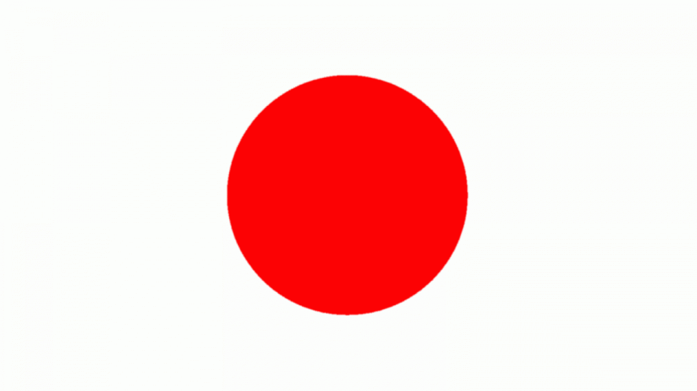

Японія — острівна країна, розташована на східному узбережжі Азії, у північно-західній частині Тихого океану. Зі сходу і півдня її омиває Тихий океан, з заходу — води Японського та Східно-Китайського морів, а з півночі — Охотське море. Японський архіпелаг простягнувся дугою з північного сходу на південний захід і налічує чотири великих острови Хоккайдо, Хонсю, Сікоку та Кюсю, які становлять 97 % поверхні суходолу і 6848 менших островів. Країна лежить у зоні помірного кліматичного поясу. Її найвіддаленішою точкою на сході є острів Мінамі-Торі села Оґасавара метрополії Токіо (153°59' східної довготи), на заході — містечко Йонаґуні префектури Окінава (122°56' східної довготи), на півдні — острів Окіношіма села Оґасавара метрополії Токіо (20°25' північної широти), а на півночі — острів Бентен міста Вакканай префектури Хоккайдо (45°31' північної широти). Площа Японії становить 377 929,99 км². Більша частина Японських островів укрита горами, серед яких багато вулканів. Найвища з них — гора Фуджі (3776 м над рівнем моря). Результати археологічних досліджень доводять, що люди заселили Японський архіпелаг у добу пізнього палеоліту. Перші писемні згадки про Японію з'являються у китайських історичних хроніках 1 століття по Р. Х. В цілому, історія Японії демонструє динамічні зміни двох парадигм, за якими розвивалася країна — активні відносини із зовнішнім світом та ізоляція від нього. Такі зміни зумовили формування самобутньої японської культури. Згідно з конституцією, Японія є унітарною конституційною монархією. Главою держави є імператор, але виконавча влада в країні зосереджена в руках прем'єр-міністра. Законодавча влада належить Парламенту, який є одним із найстарших демократичних інститутів Азії. Оскільки Японія була першою країною світу, яка пізнала жах ядерної війни, її нинішній уряд сприяє боротьбі за мир і руху роззброєння.
